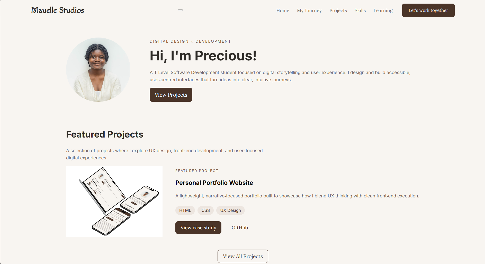
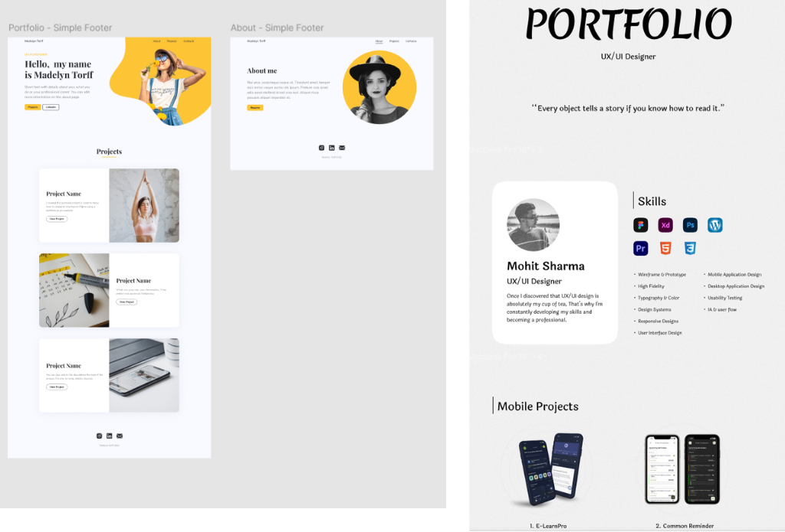
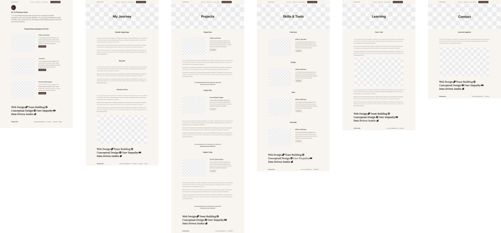
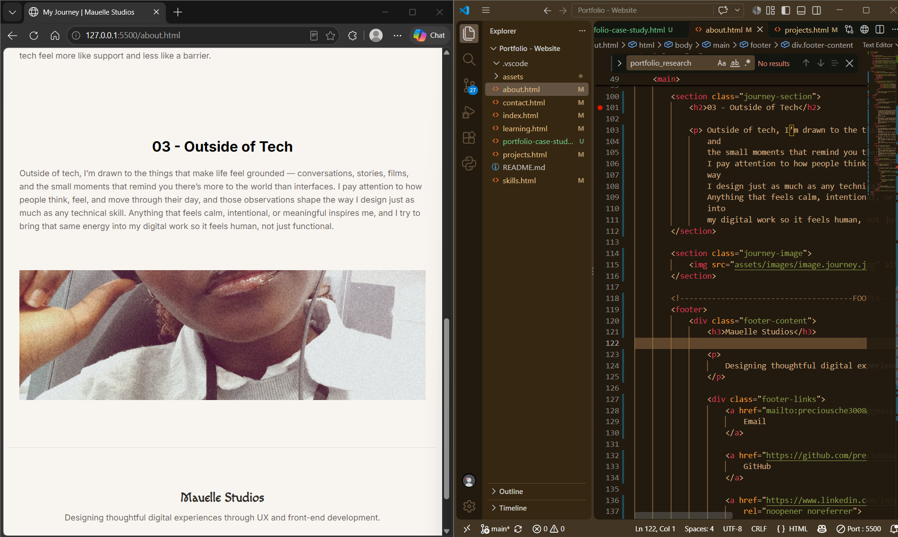
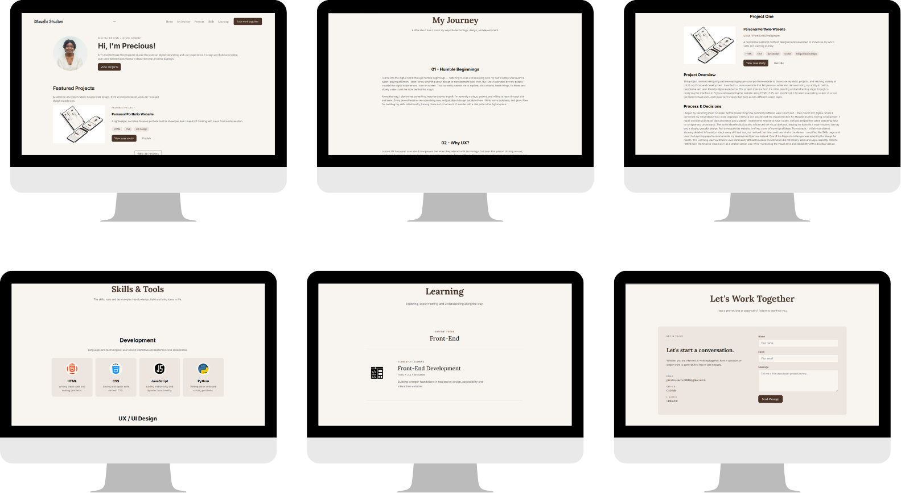
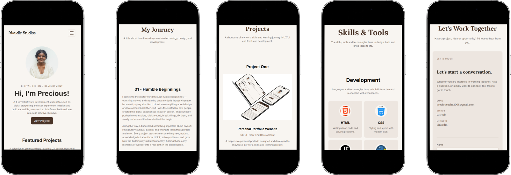

Create clarity
Build a clear and structured portfolio experience.
Personal Project · Case Study 01
A real example of how I learn, adapt, and apply digital skills in meaningful ways.
Mauelle Studios is a practical demonstration of my digital skills — from UX thinking and front-end development to responsive design, documentation and continuous improvement.

Role
Type
Tools
Timeline
The context
Mauelle Studios began as a personal project to create a space where I could recognise and document my growth as both a designer and a developer. I didn’t just want a place to display finished work — I wanted a portfolio that communicated how I think, what I’m learning, and how my skills continue to evolve over time. For a long while, my work lived across scattered files, unfinished drafts and ideas that never made it into a structured format. Over time, this left me with very little evidence of how far I had actually come. Mauelle Studios became my way of changing that.
This context shaped the foundation of the project: a digital home that reflects my development, my process, and the way design and code inform each other.
The challenge
Designing Mauelle Studios required me to communicate both sides of my skillset: the designer and the developer. As my abilities grew across UX design and front‑end development, the challenge became creating a portfolio that expressed this duality clearly and confidently.
I needed an experience that felt visually distinctive while remaining structured, accessible, responsive and easy to navigate — a balance between creativity and clarity that would support both disciplines.
Build a clear and structured portfolio experience.
Bring UX thinking and front-end development together.
Create a consistent and recognisable design system.
Create a responsive website that can evolve over time.
The approach
I approached Mauelle Studios as both a design and development project, moving from early exploration and structure into visual design and finally into front‑end implementation. This step‑by‑step progression allowed me to shape the experience thoughtfully while keeping the final build grounded in practical constraints
I began by exploring different portfolio layouts, visual directions and ways of organising content. This early stage helped me understand how my work could be presented clearly and meaningfully.
Once I had a clearer sense of structure, I moved into Figma to develop the visual identity and translate early ideas into a more defined direction.
I translated the design into HTML and CSS, using JavaScript to support interactive behaviour and responsive adjustments.
Design & development
The design of Mauelle Studios developed gradually rather than being decided all at once. I moved from rough sketches and exploration into Figma, gathered feedback, and then continued refining the design while building the website.
Starting with paper sketches
I began by sketching a series of squares on paper to explore how the different sections of my portfolio could be arranged. This gave me a simple way to experiment with the layout before committing to a design.

Researching portfolio examples
I looked at examples of existing portfolios for visual inspiration and to consider how their layouts and sections worked together. This was exploratory research rather than formal user research.

Combining ideas in Figma
I moved to Figma and combined ideas from my paper sketches with inspiration from the portfolios I had explored. This helped me establish a clearer visual direction before developing the website.

Feedback & iteration
I also shared my initial Figma design with my mentor. Their feedback encouraged me to simplify some of the tools and skills being presented, which prompted me to reconsider how much detail was necessary.
Evolving the design during coding
As I began coding, I developed additional ideas and made further decisions along the way. The design evolved during implementation rather than remaining completely fixed from the start.

The visual system
I wanted Mauelle Studios to feel personal without becoming visually overwhelming. The visual system combines warm neutrals, expressive typography and simple components to create a calm editorial experience.
Ivory
#F8F5F1Chocolate Brown
#4A3428Soft Beige
#EDE6E0Editorial headings
Used for headings and larger editorial moments.
Interface & body
Used for body text, labels and interface elements.
Brand identity
Used for the Mauelle Studios wordmark and brand moments.
The final solution
The finished website brings together the visual identity, UX structure and front-end development into one responsive portfolio experience.
Desktop experience

Mobile experience

Content is organised into clear sections so visitors can understand the portfolio quickly.
Colour, typography and components work together across the website.
The layout adapts across desktop and smaller screens.
Reflection
What I learned
Building Mauelle Studios helped me understand that design and development are not always separate stages. Some decisions became clearer once I began implementing them, which taught me to treat development as part of the design process.
What I would improve
If I developed the project again, I would introduce usability testing earlier and gather feedback from more people to evaluate the navigation, content hierarchy and overall experience.